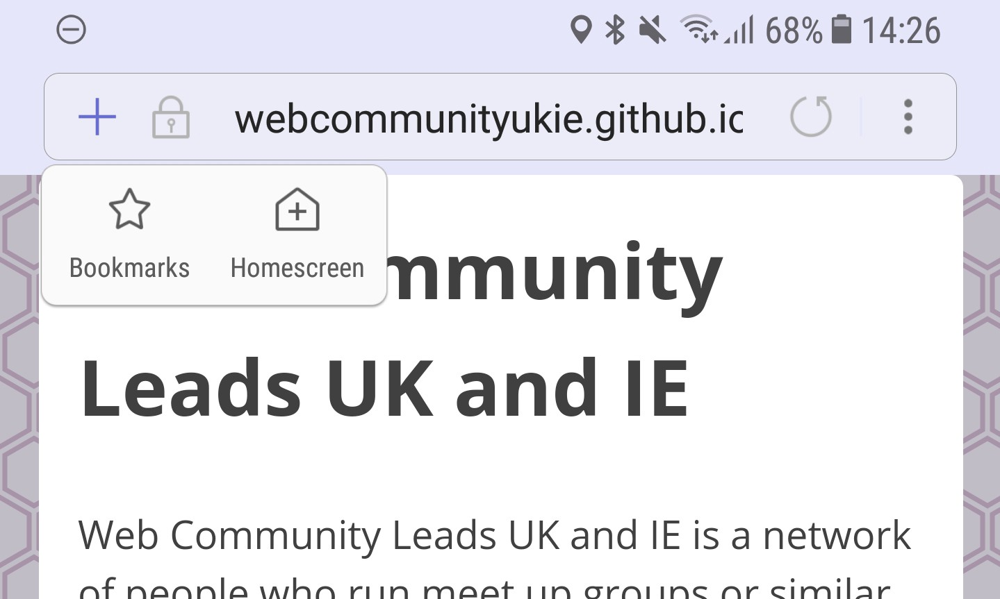

A beginner’s guide to making Progressive Web Apps
You may have heard about Progressive Web Apps or PWAs for short, I’m not going to go into all the details of what exactly makes up a PWA or how they work. For the purpose of this post, a PWA is a website that you can add to your phone’s home screen and that will work while offline.

I know some HTML, CSS, JavaScript and how to use GitHub.
I am still new to web development and don’t want to learn why and how
stuff works right now. I want an easy, basic way to make something that
works without going through pages and pages of documentation and
tutorials. Hopefully, this post will be all you need to get started in
making your own PWA.
To make a PWA we need a website. This of course, assumes you can already
make a website that scales well on all types of screens and devices. Luckily
we don’t need to do that from scratch, we can use a template. I like the ones
from HTML5 UP and Start Bootstrap.
Pick and download a theme, replace all the content with your own in the
index.html. You can even change the colours if you’re feeling brave enough
to edit some CSS.
For this project, I was making a landing page for Web Community Leads UK
and IE. You can find out more about that by reading Daniels blog post about
it, or by visiting the site I made https://webcommunityukie.github.io/
Making this website into a PWA doesn’t add much for most users as I’m not
expecting anyone to add it to their home screen, but it will still make the
experience better. I just wanted a small site to start with to get into making
PWAs myself.
I wanted a really simple site, I liked Hacksmiths website and knew it was
opensource so I downloaded and gutted it. I did keep in a link at the bottom
of the site that refers back to them and the link to the code so people can
fork our new site.
Now that we have a website we can start turning it into a progressive web
app. To do this we need to add a few things to it which I’ll go through as we
need them.